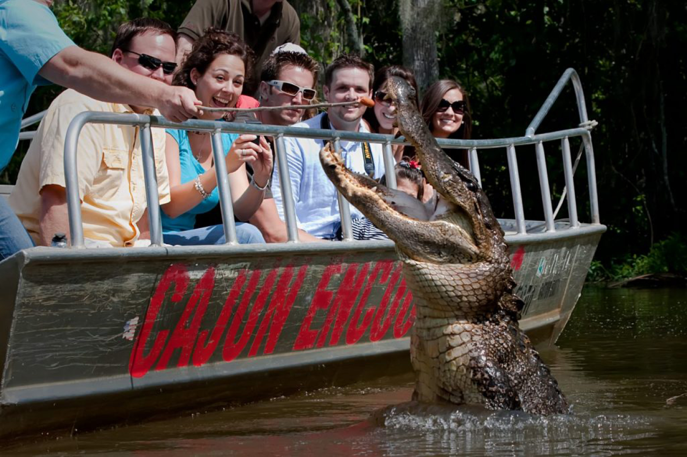

The Ultimate Bachelor Party Weekend
New Orleans Edition
No place in the world is quite like New Orleans. Bachelor parties in Austin, Nashville and Charleston has a similar feel and the same can be said for Scottsdale, Vegas, and Miami. New Orleans on the other hand is in a league of its own. Whether you’re looking for the mayhem of Mardi Gras, the soul of Jazz Fest, or just going for a random weekend - it’s always a fun experience in the bayou.
There is nothing quite like Mardi Gras in New Orleans. Celebrations are concentrated for about two weeks around late February to early March depending on the year. Usually there is one major parade each day through the French Quarter and many days have several large parades. Amazingly, this city-wide party does not slow down for the whole time. Though New Orleans is packed with tourists and everything is more exciting, it can be a great time to have you bachelor party. Wander the French Quarter streets with excitement and partying everywhere you look. Just make sure you dress for the occasion and bring some beads
The New Orleans Jazz & Heritage Festival, also known as Jazz Fest, is held the last weekend of April & first weekend of May every year. Jazz Fest is located in the northern part of the city at the Fair Ground Race Course, featuring 10+ music stages, food & beer tents, and more. The celebration isn’t limited to just the fairground however. Similar to Mardi Gras, Jazz Fest turns into a city wide party. Jazz clubs & live music halls all over the city have shows from the afternoon to the wee hours of the morning. If you want to have your bachelor party during Jazz Fest, let Flock help you navigate the city so you know exactly where to be
What’s a trip to New Orleans if you don’t explore the bayou for a while? Might as well take the time to go see some gators, or rip around the bayou on an airboat. There are many options for swamp boat or airboat tours and Flock can help find the one that’s perfect for your crew. Most tours are about 2 hours long and range from 45min - 1.5 hrs away from downtown. Some services even pick you up with coolers and ice so you don’t have to worry about a thing, or Flock can set you up with a party bus. It can be a great way to spend kick off the weekend on Friday as the guys get into town or kill some time on Saturday before the party gets going again.
Best Option for Swamp Boat Tour: Cajun Encounters is the way to go for a Swamp Boat tour. Experienced captains guide you through the Honey Island Swamp in nicely kept swamp boats. See some gators up close and personal - these boat captains know exactly where to go. Cajun Encounters will pick you up and drop you off back in New Orleans - all you have to do is pack a cooler!
Best Option for Airboat Tour: If you want to experience the bayou but want something a bit more fast paced then go with Airboat Adventures. Wipe around the swamps in a private boat for the crew and let the fresh air work off the hangover. Airboat Adventures will pick you up from the city as well - let Flock book your tour and you just enjoy
Spending a Friday or Saturday exploring around the French Quarter is all that’s required for a great bachelor party. Endless bars and strip clubs line the streets and you can walk around with booze without anyone giving a damn. Most places have live music and the cajun food is can’t miss. Sometimes it’s best not to over plan these things - just go hit the bars all day and night in this lawless land and you’ll have a good time.
Right on the southern edge of the French Quarter is Harrah’s New Orleans Casino. Not much explanation needed here - never a bad time to go win money. Harrah’s is not the world’s best casino but it’s got everything you can ask for and it’s right by the bars in the French Quater
If you and the crew have never seen a big time college football game then you should seriously consider it for the Saturday of your trip down south. There is nothing quite like SEC football and even more so, there is nothing quite like Death Valley, home of the LSU Tigers. Baton Rouge is a 1.5 - 2 hour drive from downtown New Orleans. Take a party bus out there and tailgate all day, hit the game and some bars, and head back to party into the night in French Quarter. Flock can help schedule it all and get you the perfect tickets
As we mentioned above, you don’t need much direction when your wandering around the French Quarter drinking. But here are a few spots that are worth bopping into if the crew happens to meander by:
Beerfest is right in the heart of the French Quarter and will not let you and the crew down. Its a bar with stools and about six dozen beers on tap. No food, no thrills, just a great place to sit down, crush beers and watch the game. Perfect way to get the day or night going.
Pat O'Brien's Bar is a rollicking piano lounge, a beer hall decorated with beer steins, and an outside courtyard with live music all rolled into one. There's live music daily. Hurricanes, mint juleps and bloody marys are the most popular drinks, and there's a menu of burgers, classic Creole dishes and alligator bites. It won’t let you down.
The Penthouse Club is the most popular gentleman’s club in the French Quarter. Not much explanation needed here either, but it feels worth mentioning that we would not recommend popping into just any stripe club in the French Quarter as quality is paramount - The Penthouse Club won’t let you down in that regard.
Ruby Slipper Cafe - This is one of the best breakfast spots in town. Though the Ruby Slipper has multiple locations around town, it’s best to hit up the Mid City original for a morning meal of fried chicken. Served over a biscuit and topped with poached eggs, it will kill a hangover. Delicious Bloody Mary’s will get the day going.
Jimmy J’s Cafe - Simple but perfect. Let’s not over-complicate breakfast for a crew of hungover dudes. This place has great food, great drinks, and great service. Located near the French Quarter in central business district.d everyday until 3 PM. A great place for a late breakfast and a little more hair on the dog.
Saint Lawrence - Home to some of the most beloved Fried Chicken in all of NOLA. Head here with the boys to crush some drinks, watch the game and enjoy some cajun spiced chicken.
K-Pauls Lousiana Kitchen - If the boys want an actual civilized dinner then look no further than K-Pauls - legendary New Orleans restaurant serving upscale Cajun and Creole dishes with top-quality service, good atmosphere, and good prices. Many say it is hands-down the best Cajun and Creole, French Quarter restaurant in New Orleans.
Bar Redux - If you’re staying in the Bywater then this should be your last stop before pass out time. The beloved neighborhood watering hole has not only a great bar menu that serves late it also has eclectic music, an outdoor patio, and A burlesque schedule. The menu has everything from red beans to fried chicken to cheesesteaks to quesadillas. Get your fill until 2 a.m. Monday through Thursday and until 3 a.m. Friday and Sunday.
13 Monaghan - bar and restaurant that slings top notch drunk-food (an entire section of the menu is devoted to the various forms of nacho/tater tots mash-ups). Open until 4 am every night - it also serves breakfast all day.
Cafe Du Monde (Famous Beignets) - This iconic French Quarter cafe is open 24/7, and a beignet or three is a great way to soak up the alcohol. This spot is packed with tourists all day long but it’s a different story late night after the bars close down.
Dat Dog - Dat Dog until 3 a.m. on Friday and Saturday nights serving delicious hot dogs and fries. Simple as that but it will not let you down.
The hub of the city and the oldest neighborhood in town, the French Quarter will be the focus of your bachelor party. Ideally, where you stay will be stumbling distance of Bourbon Street which is most likely where you and the boys will end up when the night comes to an end. With that said, Airbnb’s for big groups can be difficult to get in this area (though Flock may be able to get lucky). If you want to go Airbnb route, will make sure we find a place that fits your needs. If not the French Quarter, we would recommend a neighborhood close by - go for either Marigny/Bywater (north of the French Quarter) or the Garden District (south of the French Quarter)
Breakfast Club - Good old fashioned delicious diner to saddle up and lick the wounds of the night before. Breakfast Club is right in the Entertainment district and won’t let you down.
Los Favoritos Taco Shop - nothing fancy about this local taco chain, but if you are staying northeast of Old Town, we highly recommend hitting this place up for some breakfast burritos
Butters Pancakes & Café offers delicious breakfast, lunch, and dinner. A great spot to grub up and put a little hair on the dog. Pro tip - put your group on the waitlist via Yelp before you arrive so you can get right to it
Beverly on Main is a hidden gem - not only is it an awesome gastropub with live DJ and great cocktails, it also has an open kitchen until 2 am on Friday and Saturday night. Grub out on the “midnight brunch” menu after a long day of partying
Mr. Mesquite Street Tacos is the go to spot for late night tacos outside the clubs of the Entertainment District. Open to 3 AM, it’s tough to go wrong with anything on this delicious menu at this quick stop spot.
Joe's New York Pizza - What’s drunk food without pizza? Open to the 3:30AM and located right outside the bars in the entertainment district, this place won’t let you down when your looking for that post-club bite.
The hub of the city and the oldest neighborhood in town, the French Quarter will be the focus of your bachelor party. Ideally, where you stay will be stumbling distance of Bourbon Street which is most likely where you and the boys will end up when the night comes to an end. With that said, Airbnb’s for big groups can be difficult to get in this area (though Flock may be able to get lucky). If you want to go Airbnb route, will make sure we find a place that fits your needs. If not the French Quarter, we would recommend a neighborhood close by - go for either Marigny/Bywater (north of the French Quarter) or the Garden District (south of the French Quarter)
Otherwise, hotels may be your safest best. The ones that are worth staying in (good prices with availability for the whole crew) are mostly in the central business district. These three are all close to French Quarter and the casino and have some good rates:
Need help planning the perfect trip?
That’s why we’re here. Skip the spreadsheets & browser tabs that come with planning the perfect bachelor party. We’re your one-stop shop for planning the perfect trip for you and your boys.
Other destinations
Written by our Group Trip Pros to give you a taste of what a few of our favortie cities have to offer.
See More


 Bachelor parties just got better
Bachelor parties just got better